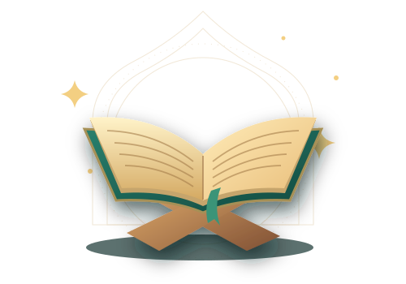

Tutor matching
We use the learner’s subject, level and schedule to guide the match.
Personalised online tutoring and Quran Education, built around your child’s goals, pace and schedule.
Five academic areas, with lessons tailored to how your child learns.
Four simple steps to find the right starting point.
Share the learner’s level, goals and preferred times.
We look at subject fit, curriculum and availability.
Meet the tutor and explore a short learning activity.
Agree on a starting point and the next goals to work on.
Evaluations help you see what your child can do, where they need practice and what the tutor plans to cover next.
Mathematics · Sample evaluation
Live, one-to-one learning in Quran reading, Noorani Qaida, Tajweed and Islamic Studies, with guidance suited to your child’s level.
Explore Quran Education
Choose your country for curriculum and scheduling guidance.
Tell us the learner’s year group, topics and exam board where relevant. For GCSE or A Level support, bring the specification or a recent question to help guide the discussion.
Share the learner’s grade, current class and state or school syllabus where relevant. For mathematics or science, a recent assignment helps identify where to begin.
Include the learner’s grade, province and course name. Curriculum expectations vary by province, so the current unit or course outline is a useful starting point.
We use the learner’s subject, level and schedule to guide the match.
The tutor and family agree on a starting point and practical goals.
Evaluations identify strengths, areas to practise and what to cover next.
Share the subject, level and learning goal with admissions. The demo is an opportunity for the tutor to discuss those goals, try a short activity and suggest a starting point.
Yes. The academic and Quran Education programmes are designed around live online lessons with one learner and one tutor.
Tell us the days and times that work for your family. Admissions can discuss tutor availability in your local time.
Lessons use learning goals and periodic evaluation to identify strengths, areas to practise and suggested next steps. The parent resources page shows an example of how this information can be presented.
A stable internet connection, a suitable device with a microphone and a quiet place to learn are a good starting point. Ask admissions about the lesson platform and any materials for your subject.
Tell us what your child would like to work on.